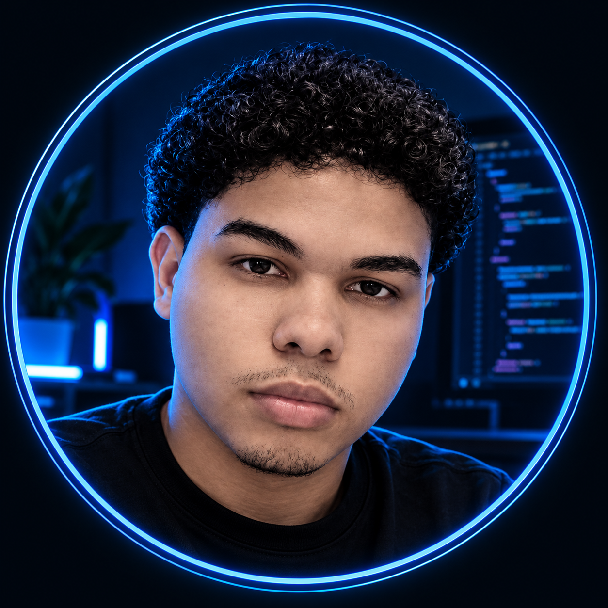
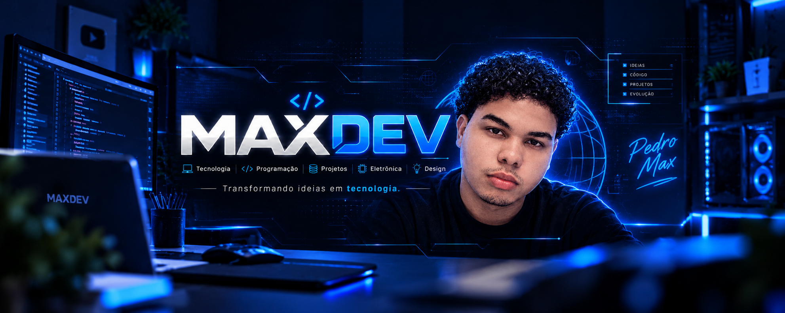

DESIGN + CRIATIVIDADE + TECNOLOGIA
Ideias ganham
forma.
Marcas ganham
presença.
Eu sou Pedro Max. Conecto criatividade e tecnologia para transformar ideias em experiências visuais que chamam a atenção.
— Design com intenção. Criatividade sem limites.
MAXDEV® CREATIVE SPACE / 01

<creative.mind />O CRIADOR POR TRÁS DAS IDEIASPedro Max ↗
✳ Criatividade em movimento
</> Do conceito ao digital.
Design visual✳Social media✳Tecnologia✳Conteúdo criativo✳Identidade visual
01 / PORTFÓLIO
Criatividade que
você pode ver.
Uma seleção de ideias que saíram do papel.
Explore os detalhes de cada criação.
Carregando as criações…

UM UNIVERSO DE POSSIBILIDADESDesign encontra tecnologia.
02 / QUEM CRIA
Uma mente curiosa.
Muitas possibilidades.
Sou Pedro Max, designer em formação e apaixonado pelo encontro entre o visual e a tecnologia.
Meu trabalho explora posts, carrosséis, stories e flyers. Cada criação é uma oportunidade de aprender, experimentar e encontrar uma nova maneira de comunicar.
Conheça meu currículo ↗03 / PRÓXIMA IDEIA
Vamos criar algo
que merece ser visto?
Sua ideia pode ser o começo de um projeto incrível.
Me conta o que você tem em mente.